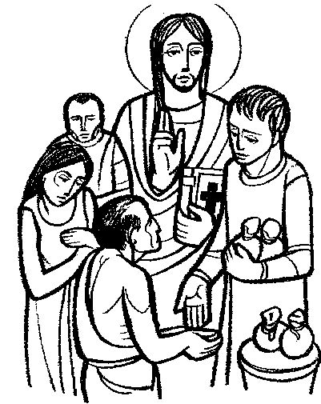
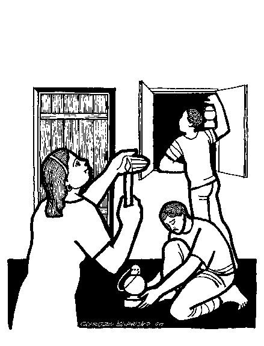

This Week: Isaiah 1:1, 10-20 and Psalm 50:1-8, 22-23 or Genesis 15:1-6 and Psalm 33:12-22, Hebrews 11:1-3, 8-16, Luke 12:32-40

Misioneros Del Sagrado CorazÃn

Cerezo Barredo's weekly gospel illustration.
Next week: Isaiah 5:1-7 and Psalm 80:1-2, 8-19 or Jeremiah 23:23-29 and Psalm 82, Hebrews 11:29-12:2, Luke 12:49-56